Continuous Delivery to AKS With Azure DevOps Environments - Part 2
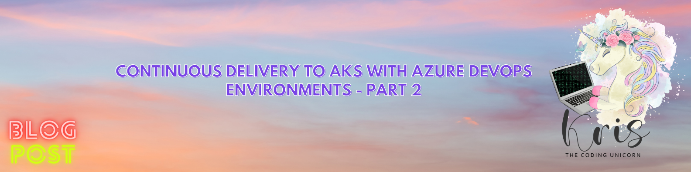
Welcome to Part 2 of blog post series on Continuous Delivery to Azure Kubernetes Service with Azure DevOps Environments! In Part 1 we looked into what Azure DevOps Environments are, what benefits they provide and how I would recommend to create ADO environments and resources based on my own experience. If you haven't read Part 1, you can check it out here: Continuous Delivery to AKS With Azure DevOps Environments - Part 1.
If you would like to know a simple but really useful way to re-use the same Azure DevOps Environment in multiple deployment stages across multiple pipelines, you can check out one of my tech tips here: Re-Using Azure DevOps Environment Efficiently Across Multiple Pipelines
In Part 2 we'll get more hands-on and deploy a test application to AKS with Azure DevOps Environments. In addition we'll take a look at how we can migrate Kubernetes resources between Azure DevOps Environments with a sprinkle of automation. Now, let's dig in!😼
Deploy application to AKS with ADO Environments
For this scenario I have used a small AKS HelloWorld application that is provided by Microsoft in following tutorial: Create an ingress controller in Azure Kubernetes Service (AKS). I have slightly modified it and created a build definition for Azure Pipelines that will deploy the application to AKS with help of Azure DevOps Environments. All the resources can be found in my GitHub repo: guidemetothemoon/demo-projects .
Let's imagine that you're a developer who has created a new microservice. All of your source code is now in an Azure DevOps repository, including build pipeline defintion (though you haven't created an actual build pipeline yet). Now you need to deploy your application to AKS. So, how can you do that directly from Azure DevOps?
Let me walk you through it😼
A quick FYI: you may see that throughout this blog post I'm using
kas part of commands that interact with a Kubernetes cluster - this is basically an alias forkubectlwhich is the full name of the Kubernetes command-line tool😺
Create Azure DevOps Environment and Kubernetes resource
First things first: let's create an Azure DevOps Environment which will represent a location we want to deploy the application to, i.e. an AKS cluster. We can do that by going to "Pipelines -> Environments" in Azure DevOps:
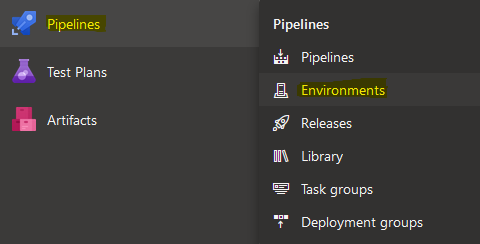
If you already have an Azure DevOps Environment you can just choose it from the list. If not, click "New Environment" in the right-hand corner and provide following information:
- Name: name of the Azure DevOps Environment. I recommend choosing a naming convention that you can follow for all ADO Environments which will make it more readable and self-explanatory. I will use naming convention that I've mentioned in Part 1 of this blog post series ->
[kubernetes_distribution]-[cluster_id]-[deployment_stage] - Description: describe what location this Environment represents. It will help external parties understand what the purpose of the Environment is.
- Resource type: in this case we'll be creating Kubernetes resources therefore we'll choose "Kubernetes" but you can also choose "Virtual machines" if resources will be deployed to VMs or "None" if you want to add resources at a later point.
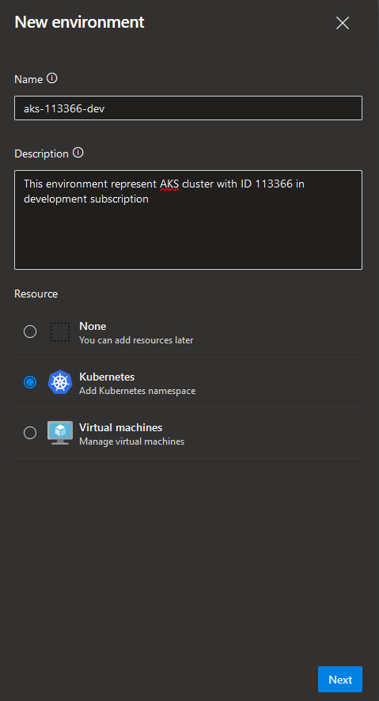
Now, let's create a Kubernetes resource as part of this ADO Environment which will represent a deployment target for the new microservice. If you already have an ADO Environment, you can navigate to it and click "Add resource" in the right-hand corner. You will then need to choose resource type which in our case will be "Kubernetes". If you created a new Environment like we did above, new resource section will be populated automatically once you click "Next". In "Add resource" section you will need to provide following information:
- Provider: Kubernetes distribution provider which in our case will be "Azure Kubernetes Service" but you can also deploy to any other Kubernetes distribution by choosing "Generic provider (existing service account)" from the dropdown.
- Azure subscription: choose Azure subscription of the AKS cluster that application will be targeting.
- Cluster: choose AKS cluster to deploy application to.
- Namespace: choose existing namespace or provide new namespace that the application will be deployed to - namespace will then be created automatically in the respective AKS cluster.
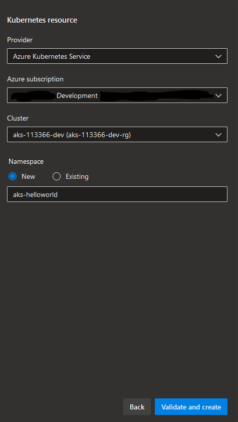
Once you're done, click "Validate and create". What happens then is:
- Azure DevOps will create a new Kubernetes service connection so that it can interact with the respective AKS cluster:
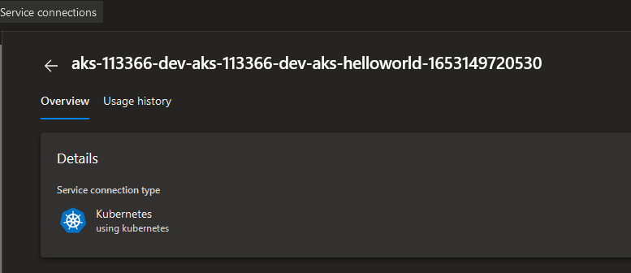
- If a new namespace was chosen, it will be created in the respective AKS cluster in addition to a new Kubernetes ServiceAccount with
cluster-adminClusterRole that can be used only in the chosen namespace which in our case is "aks-helloworld" - this is an important detail in terms of security, workload isolation and least privilege access:
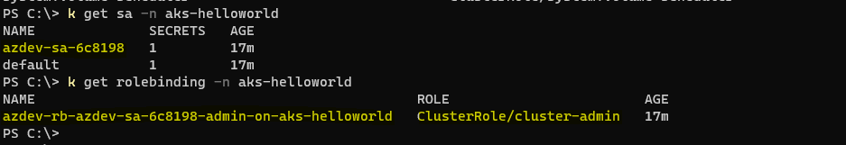
Ok, we've created a deployment location and target in Azure DevOps - as you can see in the screenshot below, it says that resource has never been deployed which makes sense since we haven't triggered any deployment yet!
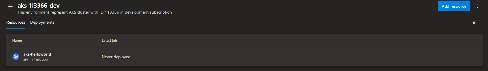
Now let's ensure that we have proper access permissions and deployment validations set for the new Azure DevOps Environment before we move ahead with the microservice deployment.
Update Access Control and Deployment Policies
You can configure access and permissions per Azure DevOps Environment. Choose an Environment and then click on 3 dots in the right-hand corner, to the right from "Add resource" button - then click "Security". You will be redirected to the page where you can see and configure user and group permissions, see inherited permissions in case there are global policies defined, as well as see which pipelines have access to the chosen Azure DevOps Environment. If you've already created a pipeline that will deploy application to the chosen ADO Environment, you can add permissions for it directly in this view by clicking on the + in the right-hand corner where you can then choose your pipeline from the list. But we haven't created a build pipeline yet so we'll leave it empty for now.
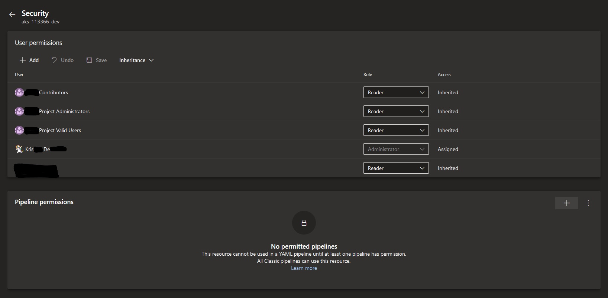
Now that we've verified that permissions look good, let's define some deployment validations. If we go back to the Environment view and click on 3 dots once again we can choose "Approvals and checks" this time. In this section you can define additional policies and validations that will be verified before a new version of the application is deployed. Let's add a policy that requires a member of "Release Administrators" group to approve the deployment - we can do that by clicking on the + in the right-hand corner and choosing "Approvals".
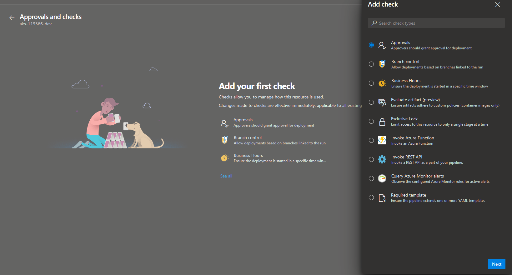
As you can see, there are quite a few other checks available that can let you have even more granular control over when and under what conditions a new application deployment can happen. In "Approvals" section we need to provide following information:
- Approvers: choose a user or a user group that is supposed to approve deployments to the chosen Azure DevOps Environment - in our case it's "Release Administrators".
- Instructions to approvers: here you may provide additional information that may be relevant for approvers during review and validation of a new deployment.
- Allow approver to approve their own runs: if checked and a member of the Approval group triggered a deployment, he/she can then approve the deployment without needing an approval from another group member.
- Timeout: here you can define how long a deployment can be in Pending state without approval until it reaches timeout.
Once finished, click "Create".
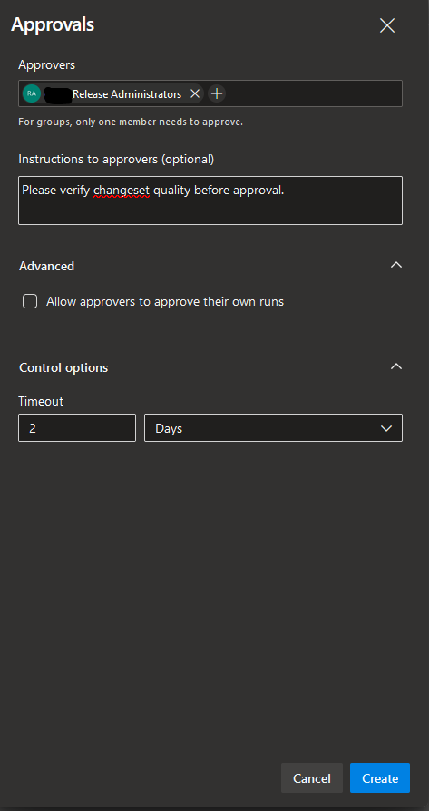
We have now added an additional policy for our deployment and we're finally ready to deploy our application to AKS with Azure DevOps Environments! Let's move on and create a build pipeline that will do the honours and perform the actual deployment😸
Create build pipeline with deployment stage
Last step before we can deploy the application is to create the actual build pipeline that will perform the deployment itself. As I mentioned earlier, all of the source code including build pipeline YAML definition is already stored in a repository in Azure DevOps. So, let's connect it to an actual pipeline. In Azure DevOps, go to "Pipelines" and click "New pipeine" in the right-hand corner. From there choose the repository type - in our case it is "Azure Repos Git". Finally, choose the repository where the source code and build definition are stored. The build definition will then be populated automatically.
Please note: if you have a repository with multiple build definition YAML files, you will need to provide exact path to the YAML file that the build should use by choosing "Existing Azure Pipelines YAML file" in the "Configure your pipeline" section.
Our build pipeline is ready to deploy the new microservice to AKS! Before we do that, let's take a look at how to connect your build with a Kubernetes resource in an Azure DevOps Environment.
Here's the build definition for our new microservice:
trigger:
branches:
include:
- master
paths:
include:
- deploy/kubernetes-templates
stages:
###############
# DEPLOYMENT #
###############
- stage: Deploy_Dev
jobs:
- deployment: Deploy_Dev_AKS
pool:
vmImage: 'ubuntu-latest'
environment: aks-113366-dev.aks-helloworld # <- Here you define deployment target for the application in following format: [environment-name].[resource-name]
strategy:
runOnce:
deploy:
steps:
- checkout: self
- task: KubernetesManifest@0
displayName: 'Install AKS HelloWorld Deployment 1'
inputs:
action: 'deploy'
namespace: 'aks-helloworld'
manifests: '$(Build.SourcesDirectory)/deploy/kubernetes-templates/aks-hw-1.yaml'
- task: KubernetesManifest@0
displayName: 'Install AKS HelloWorld Deployment 2'
inputs:
action: 'deploy'
namespace: 'aks-helloworld'
manifests: '$(Build.SourcesDirectory)/deploy/kubernetes-templates/aks-hw-2.yaml'
- task: KubernetesManifest@0
displayName: 'Install AKS HelloWorld Ingress'
inputs:
action: 'deploy'
namespace: 'aks-helloworld'
manifests: '$(Build.SourcesDirectory)/deploy/kubernetes-templates/hw-ingress.yaml'
All you need in order to be able to deploy with ADO Environments from an Azure Pipeline is to define a deployment stage with a deployment job where you provide a property called environment that tells the build pipeline exactly which Azure DevOps Environment and which resource to target. In our case this will be the Environment and Kubernetes resource that we created earlier in this post. And that's it - easy-peasy, right?😺
You can deploy to multiple environments by extending the multi-staged pipeline presented above with even more stages. In reality you will also need a build stage, a security validation stage and maybe even a deployment stage for Pre-Production and Production environments. That's when you can utilize a multi-staged pipeline to it's full potential.
It's deployment time! Since we haven't explicitly added a newly created build pipeline in the "Pipeline permissions" list which we looked at earlier, once the build is triggered it will ask you to provide it 2 types of permissions:
- Permission to use the Kubernetes service connection that was created by Azure DevOps for the respective Kubernetes resource.
- Permission to access the Azure DevOps Environment where the Kubernetes resource resides.
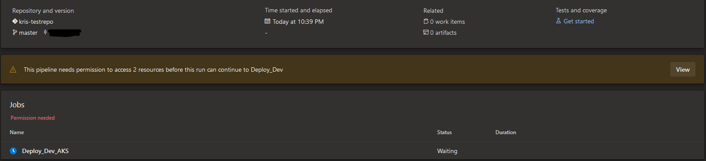
You can review and approve permissions by clicking on "View" in the middle section of the build execution page. Since we've defined a deployment policy for this ADO Environment the build will also request the "Release Administrators" group to review and approve the deployment before it's executed.
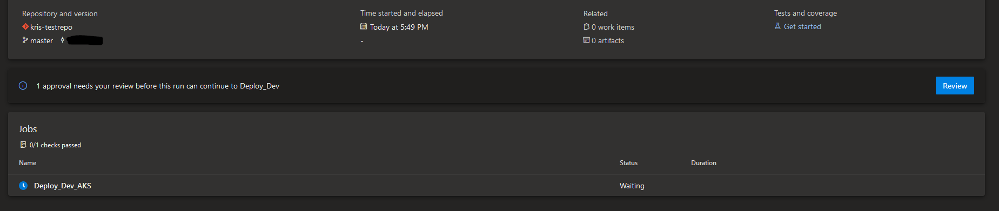
Once the build pipeline gets all the needed permissions it will execute successfully and you can see a new tab available called "Environments" - here you can view which Azure DevOps Environments and resources the build deployed to. If you have several deployment stages that target different resources and even different Azure DevOps Environments, all of them will pop up in the same tab. By clicking on "View environment" you will be taken to the respective ADO Environment page.
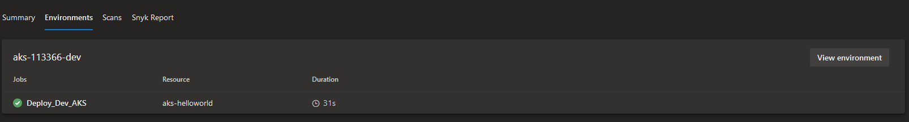
We've done it - good job!😻 Our new and shiny microservice was successfully deployed to AKS - let's take a look at how it looks like in the aks-helloworld namespace:
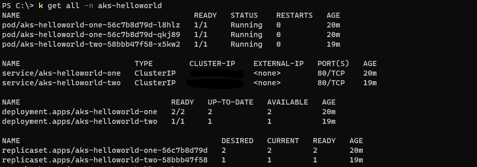
Looks good under the hood!🦾 If we want to access the application, we can do that by retrieving the External IP of aks-helloworld Ingress with kubectl get ingress -n aks-helloworld and accessing it in the browser. Or we can even expose the app by creating a new DNS entry that points to the same External IP.
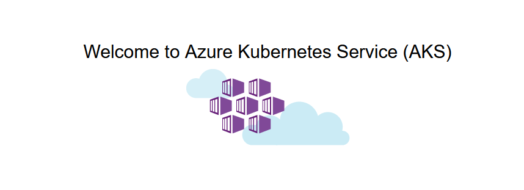
Before we go and take a well-deserved cup of coffee, let's take a final look at what information we can get about the deployment from an active Kubernetes resource in an Azure DevOps Environment.
Deploy and look around
Now that the new microservice is up and running in AKS let's see what information about it's deployment is available for us directly from Azure DevOps. In the chosen Environment page we can see two tabs - Resources and Deployments:
- Resources tab includes all the deployment targets that are located in the chosen Environment.
- Deployments tab provides a history of all the deployments, both successful and failed, that have been executed for all the resources in the chosen ADO Environment. From here you can see what resource was deployed, what was the last changeset included in the deployment and a link to the build where the deployment happened.
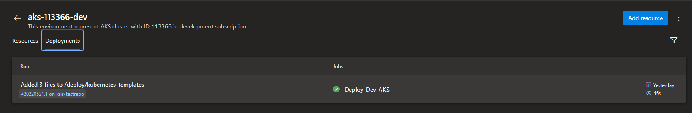
Let's choose aks-helloworld Kubernetes resource from the Resources tab and see what information is available for us about a Kubernetes resource in an ADO Environment.
Workloads
Workloads section provides overview of resources that are created as part of application's deployment. 4 types of resources can be displayed in this view: Deployment, ReplicaSet, DaemonSet and StatefulSet. You can also filter the list by workload name or resource type by clicking on Filter icon on the right-hand side and choosing resource type from the dropdown (marked green in the screenshot below).
You can also Validate or even Delete a resource by clicking on 3 dots in the right-hand corner (marked orange in the screenshot below). For instance, if a new deployment suddenly fails you may use Validate functionality to verify if the application's deployment and Azure DevOps connection to it are healthy.
If you click on the link right below the resource name - in our case it's aks-113366-dev (cluster) (marked yellow in the screenshot below), you'll be navigated to the respective AKS resource in Azure portal.
Finally, if we take a look at the list of Deployments, among other details, we can see what container image was used in the respective Deployment and how many Pods were created and are currently up and running.
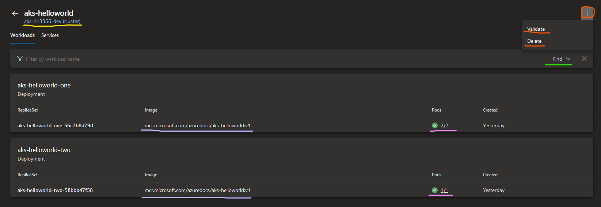
If we click on the Pods count in one of the Deployment resources (marked pink in the screenshot below), for each Pod in the Deployment we get to see even more useful information:
- Overview: basic information about Pod's annotations, restart policy, node name, labels, conditions, current state, etc.
- YAML: Kubernetes YAML template for Pod resource definition.
- Logs: here you get access to all the Logs, just as if you've executed
kubectl logs [pod_name] -n [namespace]! You will need to switch between tabs or refresh to get the newest logs though. This can be very useful for initial analysis of the application's performance, especially if you have developers who don't work with Kubernetes on a daily basis and just need to retrieve application logs without too much hassle.😼
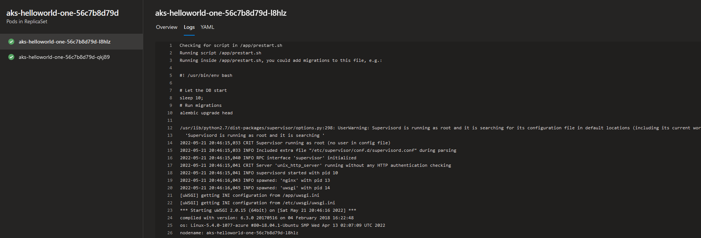
Services
Services tab provides us overview of all the Services that were created as part of the Deployment. Services of different types will pop up in the same list and you can filter in the same way as in the Workloads section - either by Service name or by choosing a Service type from the dropdown on the right-hand side. Validate/Delete and link to AKS cluster in Azure portal work in the same way as in Workloads section.
In this view you can find some basic information about the Service like it's Cluster IP, External IP and Port.
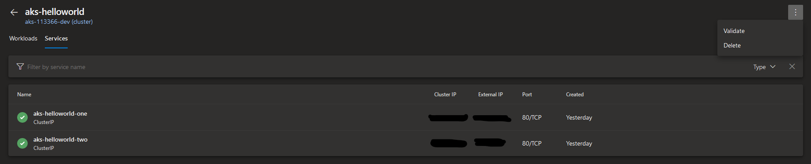
By clicking on the Service you will be taken to a new page where you can find some more useful information:
- Service details: this section contains details about the Kubernetes Service like it's labels, annotations, session affinity, etc. Here you can also see the link to the latest build from which the Service was provisioned (marked blue in the screenshot below) which you can use to navigate further to the respective build execution log.
- Associated pods: this section represents all the Pods that the Service fronts and the workloads that Pods are linked to. By clicking on the Workload link (marked red in the screenshot below) you will be redirected to the respective workload detail page.
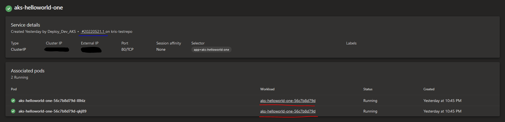
As you can see, there's a lot of information you can retrieve about an application's deployment directly in Azure DevOps which can come in quite handy for the development teams when they need to check upon the application's state or perform initial analysis of the issues.
Automate migration of Kubernetes resources between Azure DevOps Environments
In some cases you may need to migrate resources between Azure DevOps Environments and it will typically require a lot of clicks and typing in the UI. I've decided to automate that and created a PowerShell script that can perform the migration automatically for you. This script supports migration of Kubernetes resources that are using Azure Kubernetes Service provider. You can find the script in my GitHub repo: guidemetothemoon/Move-AKS-Environments
Prior to running the script, please ensure that you have created an Azure DevOps Personal Access Token (PAT) with read/write permissions that will allow the script to create Azure DevOps Environments, Kubernetes resources and Kubernetes service connections.
The script covers two cases:
- Migrate Kubernetes resources from Environment1 to Environment2 and target the same AKS cluster. Script can be called with following arguments:
Move-AKS-Environments.ps1 -AccessToken "azure-devops-pat" -AzureDevOpsUrl "https://azure-devops-url/org-name/project-name/" -SourceEnvironmentName "Environment1" -TargetEnvironmentName "Environment2" -TargetEnvironmentDescription "New target Azure DevOps Environment" - Migrate Kubernetes resources from Environment1 to Environment2 and target new AKS cluster called “NewAKSCluster”. In this case you need to ensure that you have downloaded
aks-svc-connection-template.jsonfile and it's in the same folder as the script. This file will be used by the script in order to create service connections for the new AKS cluster. Script can be called with following arguments:Move-AKS-Environments.ps1 -AccessToken "azure-devops-pat" -AzureDevOpsUrl "https://azure-devops-url/org-name/project-name/" -SourceEnvironmentName "Environment1" -TargetEnvironmentName "Environment2" -TargetClusterName "NewAKSCluster" -TargetClusterResourceGroup "NewAKSCluster-rg" -SubscriptionId "aks-cluster-azure-subscription-id" -TenantId "azure-ad-tenant-id"
Please note: migration in this case creates and moves metadata and logical representation and grouping of resources (which Azure DevOps Environments and resources are in it's pure sense). The actual deployment happens in Azure Pipelines therefore deployment stages must be updated accordingly once the migration is complete.
Additional resources
If you would like to learn more about Azure DevOps Environments you may find these resources useful:
As I briefly mentioned in this blog post series, ADO Environments support deployments not only to AKS but also to other Kubernetes distributions and even to Virtual Machines. If you're going to deploy to these environments it's a good idea to use some time and think how you're going to protect such connections. For example, with IP range whitelisting, firewall rules and by using an existing ServiceAccount that has only the required permissions and is scoped to a single namespace. You can find more information here:
Environment - Kubernetes resource
Environment - virtual machine resource
More information about what Azure DevOps Environments are can be found here:
Create and target an environment
Final thought: Azure DevOps Environments are easy to start with and can work really well when you don't want to introduce a new tool or when you have a relatively small amount of microservices to deploy. When there are hundreds of microservices that must be deployed and upgraded efficiently you might want to use a more advanced tool that has more extensive capabilities than what ADO Environments have to offer but this is a story for another blog post😺
That's it from me this time, thanks for checking in!
If this article was helpful, I'd love to hear about it! You can reach out to me on LinkedIn, Twitter, GitHub or by using the contact form on this page 😺
Stay secure, stay safe.
Till we connect again!😻